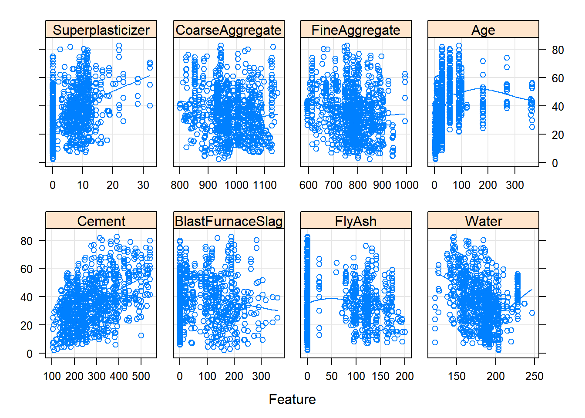
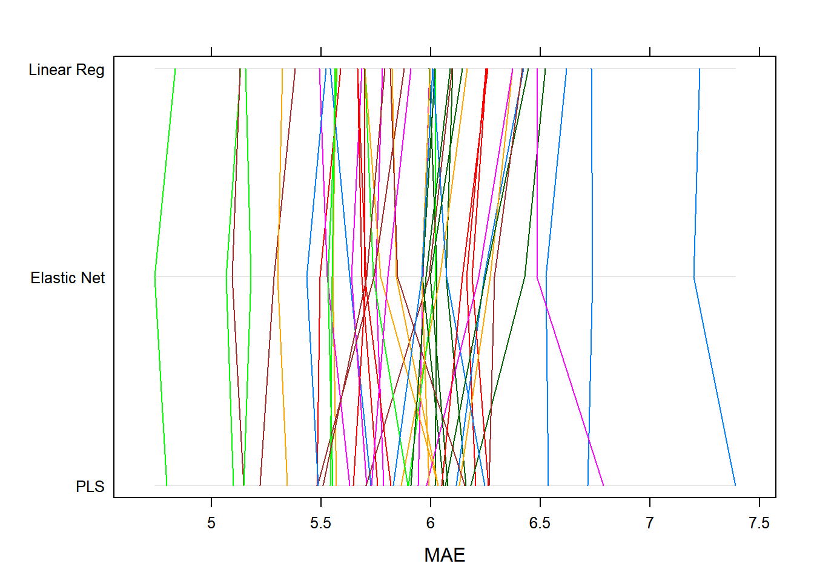
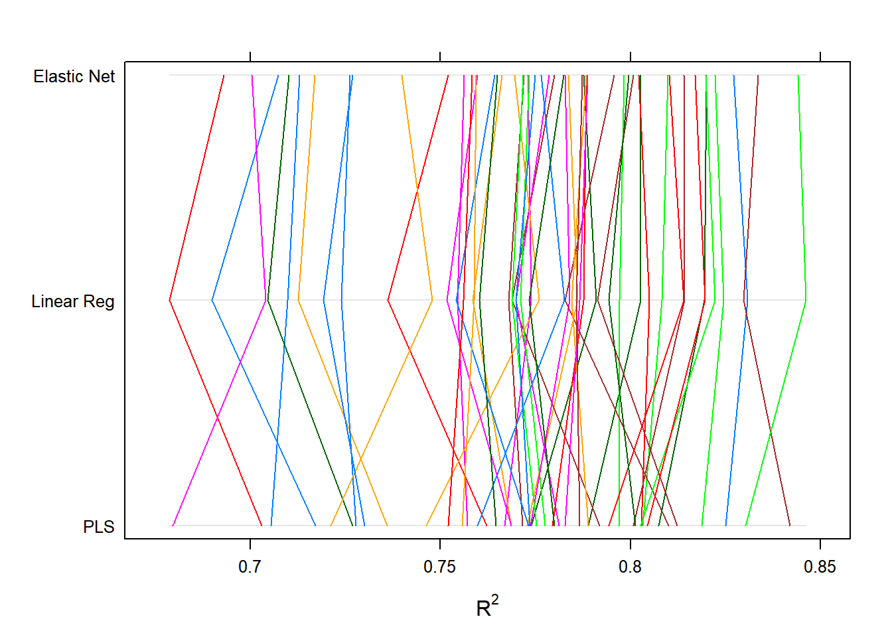

APM Computation
Regression Models
Chapter 5: Measuring Performance in Regression Models
rm(list=ls())
observed <- c(0.22, 0.83,-0.12, 0.89,-0.23,-1.30,-0.15,-1.4,
0.62, 0.99,-0.18, 0.32, 0.34,-0.30, 0.04,-0.87,
0.55,-1.30,-1.15, 0.20)
predicted <- c(0.24, 0.78,-0.66, 0.53, 0.70,-0.75,-0.41,-0.43,
0.49, 0.79,-1.19, 0.06, 0.75,-0.07, 0.43,-0.42,
-0.25,-0.64,-1.26,-0.07)
residualValues <- observed - predicted
summary(residualValues)## Min. 1st Qu. Median Mean 3rd Qu. Max.
## -0.9700 -0.4200 0.0800 -0.0310 0.2625 1.0100# observed versus predicted
axisRange <- extendrange(c(observed, predicted))
plot(observed, predicted, ylim = axisRange, xlim = axisRange)
abline(0, 1, col = "darkgrey", lty = 2)# predicted versus residuals
plot(predicted, residualValues, ylab = "residual")
abline(h = 0, col = "darkgrey", lty = 2)
# quantitative model performance measures
library(caret)R2(predicted, observed)## [1] 0.5170123RMSE(predicted, observed)## [1] 0.5234883cor(predicted, observed) # base R simple correlation## [1] 0.7190357cor(predicted, observed)^2 # match R^2## [1] 0.5170123cor(predicted, observed, method = "spearman") # rank correlation## [1] 0.7554552Chapter 6: Linear Regression and Its Cousins
rm(list = ls())
require(AppliedPredictiveModeling)
require(elasticnet)
require(lars)
require(caret)
require(MASS)
require(pls)
require(stats)
data(solubility)
ls(pattern = "^sol") # obj beginning w "sol"## [1] "solTestX" "solTestXtrans" "solTestY" "solTrainX"
## [5] "solTrainXtrans" "solTrainY"trainingData <- solTrainXtrans
trainingData$Solubility <- solTrainY
### Ordinary Linear Regression ###
lmFitAllPredictors <- lm(Solubility ~., data = trainingData)
str(summary(lmFitAllPredictors)) # training results## List of 11
## $ call : language lm(formula = Solubility ~ ., data = trainingData)
## $ terms :Classes 'terms', 'formula' language Solubility ~ FP001 + FP002 + FP003 + FP004 + FP005 + FP006 + FP007 + FP008 + FP009 + FP010 + FP011 + FP012 +| __truncated__ ...
## .. ..- attr(*, "variables")= language list(Solubility, FP001, FP002, FP003, FP004, FP005, FP006, FP007, FP008, FP009, FP010, FP011, FP012, FP013, | __truncated__ ...
## .. ..- attr(*, "factors")= int [1:229, 1:228] 0 1 0 0 0 0 0 0 0 0 ...
## .. .. ..- attr(*, "dimnames")=List of 2
## .. .. .. ..$ : chr [1:229] "Solubility" "FP001" "FP002" "FP003" ...
## .. .. .. ..$ : chr [1:228] "FP001" "FP002" "FP003" "FP004" ...
## .. ..- attr(*, "term.labels")= chr [1:228] "FP001" "FP002" "FP003" "FP004" ...
## .. ..- attr(*, "order")= int [1:228] 1 1 1 1 1 1 1 1 1 1 ...
## .. ..- attr(*, "intercept")= int 1
## .. ..- attr(*, "response")= int 1
## .. ..- attr(*, ".Environment")=<environment: R_GlobalEnv>
## .. ..- attr(*, "predvars")= language list(Solubility, FP001, FP002, FP003, FP004, FP005, FP006, FP007, FP008, FP009, FP010, FP011, FP012, FP013, | __truncated__ ...
## .. ..- attr(*, "dataClasses")= Named chr [1:229] "numeric" "numeric" "numeric" "numeric" ...
## .. .. ..- attr(*, "names")= chr [1:229] "Solubility" "FP001" "FP002" "FP003" ...
## $ residuals : Named num [1:951] -0.36722 0.62243 -0.47199 -0.33254 -0.00967 ...
## ..- attr(*, "names")= chr [1:951] "661" "662" "663" "665" ...
## $ coefficients : num [1:229, 1:4] 2.4307 0.3594 0.1456 -0.0397 -0.3049 ...
## ..- attr(*, "dimnames")=List of 2
## .. ..$ : chr [1:229] "(Intercept)" "FP001" "FP002" "FP003" ...
## .. ..$ : chr [1:4] "Estimate" "Std. Error" "t value" "Pr(>|t|)"
## $ aliased : Named logi [1:229] FALSE FALSE FALSE FALSE FALSE FALSE ...
## ..- attr(*, "names")= chr [1:229] "(Intercept)" "FP001" "FP002" "FP003" ...
## $ sigma : num 0.552
## $ df : int [1:3] 229 722 229
## $ r.squared : num 0.945
## $ adj.r.squared: num 0.927
## $ fstatistic : Named num [1:3] 54 228 722
## ..- attr(*, "names")= chr [1:3] "value" "numdf" "dendf"
## $ cov.unscaled : num [1:229, 1:229] 15.3197 -0.0678 -0.0537 0.0504 -0.022 ...
## ..- attr(*, "dimnames")=List of 2
## .. ..$ : chr [1:229] "(Intercept)" "FP001" "FP002" "FP003" ...
## .. ..$ : chr [1:229] "(Intercept)" "FP001" "FP002" "FP003" ...
## - attr(*, "class")= chr "summary.lm"lmPred1 <- predict(lmFitAllPredictors, solTestXtrans)
head(lmPred1)## 20 21 23 25 28 31
## 0.99370933 0.06834627 -0.69877632 0.84796356 -0.16578324 1.40815083lmValues1 <- data.frame(obs = solTestY, pred = lmPred1)
defaultSummary(lmValues1) # caret metrics## RMSE Rsquared MAE
## 0.7455802 0.8722236 0.5497605# using robust lm from MASS (uses Huber approach)
ctrl <- trainControl(method = "cv", number = 10)
set.seed(100)
lmFit1 <- train(x = solTrainXtrans, y = solTrainY,
method = "lm", trControl = ctrl)
lmFit1## Linear Regression
##
## 951 samples
## 228 predictors
##
## No pre-processing
## Resampling: Cross-Validated (10 fold)
## Summary of sample sizes: 856, 856, 855, 855, 857, 856, ...
## Resampling results:
##
## RMSE Rsquared MAE
## 0.6926348 0.8872058 0.5199216
##
## Tuning parameter 'intercept' was held constant at a value of TRUExyplot(solTrainY ~ predict(lmFit1),
# plot points and use background grid
type = c("p", "g"),
xlab = "Predicted", ylab = "Observed")xyplot(resid(lmFit1) ~ predict(lmFit1),
type = c("p", "g"),
xlab = "Predicted", ylab = "Residuals")# using train function
corThresh <- 0.9
tooHigh <- findCorrelation(cor(solTrainXtrans), corThresh)
corrPred <- names(solTrainXtrans)[tooHigh]
trainXfiltered <- solTrainXtrans[, -tooHigh]
testXfiltered <- solTestXtrans[, -tooHigh]
set.seed(100)
lmFiltered <- train(trainXfiltered, solTrainY, method = "lm", trControl = ctrl)
lmFiltered## Linear Regression
##
## 951 samples
## 190 predictors
##
## No pre-processing
## Resampling: Cross-Validated (10 fold)
## Summary of sample sizes: 856, 856, 855, 855, 857, 856, ...
## Resampling results:
##
## RMSE Rsquared MAE
## 0.6980579 0.8857871 0.5251033
##
## Tuning parameter 'intercept' was held constant at a value of TRUErlmPCA <- train(trainXfiltered, solTrainY, method = "rlm", preProcess = "pca", trControl = ctrl)
rlmPCA## Robust Linear Model
##
## 951 samples
## 190 predictors
##
## Pre-processing: principal component signal extraction (190),
## centered (190), scaled (190)
## Resampling: Cross-Validated (10 fold)
## Summary of sample sizes: 856, 855, 857, 855, 855, 855, ...
## Resampling results across tuning parameters:
##
## intercept psi RMSE Rsquared MAE
## FALSE psi.huber 2.8428697 0.8365759 2.7190689
## FALSE psi.hampel 2.8430314 0.8366099 2.7192498
## FALSE psi.bisquare 2.8427605 0.8367128 2.7191205
## TRUE psi.huber 0.8332064 0.8352457 0.6342326
## TRUE psi.hampel 0.8306776 0.8361875 0.6353316
## TRUE psi.bisquare 0.8395935 0.8328240 0.6376391
##
## RMSE was used to select the optimal model using the smallest value.
## The final values used for the model were intercept = TRUE and psi
## = psi.hampel.### Partial Least Squares ###
plsFit <- plsr(Solubility ~., data = trainingData)
predict(plsFit, solTestXtrans[1:5,], ncomp = 1:2)## , , 1 comps
##
## Solubility
## 20 -1.789335
## 21 -1.427551
## 23 -2.268798
## 25 -2.269782
## 28 -1.867960
##
## , , 2 comps
##
## Solubility
## 20 0.2520469
## 21 0.3555028
## 23 -1.8795338
## 25 -0.6848584
## 28 -1.5531552# using train function
plsTune <- train(solTrainXtrans, solTrainY,
method = "pls",
tuneLength = 20, # default tuning grid evals 1:tuneLength
trControl = ctrl,
preProcess = c("center", "scale"))
plsTune## Partial Least Squares
##
## 951 samples
## 228 predictors
##
## Pre-processing: centered (228), scaled (228)
## Resampling: Cross-Validated (10 fold)
## Summary of sample sizes: 855, 856, 856, 857, 855, 856, ...
## Resampling results across tuning parameters:
##
## ncomp RMSE Rsquared MAE
## 1 1.2837126 0.6035247 0.9922825
## 2 1.0547201 0.7324842 0.8319901
## 3 0.9357512 0.7900099 0.7242684
## 4 0.8616608 0.8211019 0.6722070
## 5 0.8160783 0.8387881 0.6361127
## 6 0.7822121 0.8532419 0.6045357
## 7 0.7563839 0.8627598 0.5768689
## 8 0.7445818 0.8666266 0.5698316
## 9 0.7319242 0.8710991 0.5593103
## 10 0.7165426 0.8766836 0.5474919
## 11 0.7114162 0.8786968 0.5428781
## 12 0.7016554 0.8820784 0.5353093
## 13 0.7005284 0.8826371 0.5331785
## 14 0.7016078 0.8824373 0.5350061
## 15 0.6973150 0.8839006 0.5303442
## 16 0.6941679 0.8850301 0.5307692
## 17 0.6941309 0.8850671 0.5328551
## 18 0.6902336 0.8862730 0.5310625
## 19 0.6929507 0.8853791 0.5320262
## 20 0.6948920 0.8847706 0.5335884
##
## RMSE was used to select the optimal model using the smallest value.
## The final value used for the model was ncomp = 18.### Penalized Regression Models ###
# ridge; lm.ridge from MASS or enet from elasticnet
ridgeModel <- enet(x = as.matrix(solTrainXtrans), y = solTrainY,
lambda = 0.001) # this is ridge penalty
ridgePred <- predict(ridgeModel, newx = as.matrix(solTestXtrans),
s = 1, mode = "fraction", # s=1 is full solution. lasso lamba=0 so this is ridge regression
type = "fit")
head(ridgePred$fit)## 20 21 23 25 28 31
## 0.96795590 0.06918538 -0.54365077 0.96072014 -0.03594693 1.59284535# defining tuning grid
ridgeGrid <- data.frame(.lambda = seq(0, 0.1, length = 15))
set.seed(100)
ridgeRegFit <- train(solTrainXtrans, solTrainY,
method = "ridge",
tuneGrid = ridgeGrid,
trControl = ctrl,
preProcess = c("center", "scale"))
ridgeRegFit## Ridge Regression
##
## 951 samples
## 228 predictors
##
## Pre-processing: centered (228), scaled (228)
## Resampling: Cross-Validated (10 fold)
## Summary of sample sizes: 856, 856, 855, 855, 857, 856, ...
## Resampling results across tuning parameters:
##
## lambda RMSE Rsquared MAE
## 0.000000000 0.6923558 0.8872977 0.5194817
## 0.007142857 0.6842051 0.8901855 0.5180204
## 0.014285714 0.6782572 0.8924345 0.5135023
## 0.021428571 0.6763196 0.8933364 0.5129646
## 0.028571429 0.6761659 0.8936611 0.5137609
## 0.035714286 0.6770285 0.8936769 0.5150076
## 0.042857143 0.6785555 0.8935075 0.5169778
## 0.050000000 0.6805575 0.8932196 0.5190373
## 0.057142857 0.6829220 0.8928530 0.5213703
## 0.064285714 0.6855755 0.8924331 0.5238093
## 0.071428571 0.6884742 0.8919761 0.5263585
## 0.078571429 0.6915802 0.8914943 0.5290529
## 0.085714286 0.6948706 0.8909958 0.5318508
## 0.092857143 0.6983276 0.8904864 0.5347012
## 0.100000000 0.7019378 0.8899703 0.5375828
##
## RMSE was used to select the optimal model using the smallest value.
## The final value used for the model was lambda = 0.02857143.# lasso: lars from lars or enet from elasticnet or glmnet
enetModel <- enet(x = as.matrix(solTrainXtrans), y = solTrainY,
lambda = 0.01, normalize = TRUE) # normalize does center and scale
enetPred <- predict(enetModel, newx = as.matrix(solTestXtrans),
s = 0.1, mode = "fraction",
type = "fit")
names(enetPred)## [1] "s" "fraction" "mode" "fit"head(enetPred$fit)## 20 21 23 25 28 31
## -0.60186178 -0.42226814 -1.20465564 -1.23652963 -1.25023517 -0.05587631enetCoef <- predict(enetModel, newx = as.matrix(solTestXtrans),
s = 0.1, mode = "fraction",
type = "coefficients")
tail(enetCoef$coefficients)## NumChlorine NumHalogen NumRings HydrophilicFactor
## 0.00000000 0.00000000 0.00000000 0.12678967
## SurfaceArea1 SurfaceArea2
## 0.09035596 0.00000000# using train function for lasso
enetGrid <- expand.grid(.lambda = c(0, 0.01, 0.1),
.fraction = seq(0.05, 1, length = 20))
set.seed(100)
enetTune <- train(solTrainXtrans, solTrainY,
method = "enet",
tuneGrid = enetGrid,
trControl = ctrl,
preProcess = c("center", "scale"))
plot(enetTune)Chapter 7: Nonlinear Regression Models
rm(list = ls())
require(AppliedPredictiveModeling)
require(caret)
require(earth)
require(kernlab)
require(nnet)
### Neural Networks ###
# using nnet
# nnetFit <- nnet(predictors, outcome,
# size = 5,
# decay = 0.01,
# linout = TRUE,
# trace = FALSE,
# maxit = 500,
# MaxNwts = 5 * (ncol(predictors) + 1) + 5 + 1)
# nnetAvg <- avNNet(predictors, outcome,
# size = 5,
# decay = 0.01,
# linout = TRUE,
# trace = FALSE,
# maxit = 500,
# MaxNwts = 5 * (ncol(predictors) + 1) + 5 + 1)
# predict(nnetFit, newData)
# predict(nnetAvg, newData)
# using train function, method = "nnet" or method = "avNNet"
data(solubility)
tooHigh <- findCorrelation(cor(solTrainXtrans), cutoff = 0.75)
trainXnnet <- solTrainXtrans[, -tooHigh]
testXnnet <- solTestXtrans[, -tooHigh]
nnetGrid <- expand.grid(.decay = c(0, 0.01, 0.1),
.size = c(1:10),
.bag = FALSE)
ctrl <- trainControl(method = "cv", number = 10)
set.seed(100)
# nnetTune <- train(trainXnnet, solTrainY, # takes a long time to run
# method = "avNNet",
# tuneGrid = nnetGrid,
# trControl = ctrl,
# preProcess = c("center", "scale"),
# linout = TRUE,
# trace = FALSE,
# MaxNWts = 10 * (ncol(trainXnnet) + 1) + 10 + 1,
# maxit = 500)
### Multivariate Adaptive Regression Splines ###
# using earth package
marsFit <- earth(solTrainXtrans, solTrainY)
marsFit## Selected 40 of 47 terms, and 31 of 228 predictors
## Termination condition: RSq changed by less than 0.001 at 47 terms
## Importance: NumNonHAtoms, SurfaceArea2, MolWeight, SurfaceArea1, ...
## Number of terms at each degree of interaction: 1 39 (additive model)
## GCV 0.3873018 RSS 309.672 GRSq 0.9076346 RSq 0.9221793summary(marsFit) # more details## Call: earth(x=solTrainXtrans, y=solTrainY)
##
## coefficients
## (Intercept) -4.455949
## FP002 0.733904
## FP003 -0.203502
## FP059 -0.613495
## FP065 -0.278610
## FP075 0.295269
## FP083 -0.563202
## FP085 -0.193880
## FP099 0.337591
## FP111 -0.428246
## FP135 0.405277
## FP142 0.397119
## FP154 -0.597650
## FP172 -0.527362
## FP176 0.294774
## FP188 0.407757
## FP202 0.279390
## FP204 -0.336720
## FP207 0.424005
## h(MolWeight-5.77157) -1.964915
## h(5.94458-MolWeight) 0.686131
## h(2.99573-NumNonHAtoms) 2.755144
## h(NumNonHAtoms-2.99573) -3.517132
## h(2.57858-NumNonHBonds) -0.647484
## h(0.79877-NumMultBonds) -0.501790
## h(2.19722-NumRotBonds) 0.120247
## h(NumRotBonds-2.19722) -2.709055
## h(0.941208-NumDblBonds) 0.501773
## h(2.48491-NumAromaticBonds) 0.492052
## h(NumAromaticBonds-2.48491) -2.811877
## h(0.584815-NumNitrogen) -1.593633
## h(NumNitrogen-0.584815) 9.162309
## h(1.38629-NumOxygen) -0.730829
## h(NumOxygen-1.38629) 3.358142
## h(NumChlorine-0.46875) -51.880014
## h(-0.816625-HydrophilicFactor) -0.374411
## h(HydrophilicFactor- -0.816625) 0.196559
## h(SurfaceArea1-1.9554) 0.148552
## h(4.66178-SurfaceArea2) -0.158472
## h(SurfaceArea2-4.66178) -0.168509
##
## Selected 40 of 47 terms, and 31 of 228 predictors
## Termination condition: RSq changed by less than 0.001 at 47 terms
## Importance: NumNonHAtoms, SurfaceArea2, MolWeight, SurfaceArea1, ...
## Number of terms at each degree of interaction: 1 39 (additive model)
## GCV 0.3873018 RSS 309.672 GRSq 0.9076346 RSq 0.9221793plotmo(marsFit)## plotmo grid: FP001 FP002 FP003 FP004 FP005 FP006 FP007 FP008 FP009
## 0 1 0 1 1 0 0 0 0
## FP010 FP011 FP012 FP013 FP014 FP015 FP016 FP017 FP018 FP019 FP020 FP021
## 0 0 0 0 0 1 0 0 0 0 0 0
## FP022 FP023 FP024 FP025 FP026 FP027 FP028 FP029 FP030 FP031 FP032 FP033
## 0 0 0 0 0 0 0 0 0 0 0 0
## FP034 FP035 FP036 FP037 FP038 FP039 FP040 FP041 FP042 FP043 FP044 FP045
## 0 0 0 0 0 0 0 0 0 0 0 0
## FP046 FP047 FP048 FP049 FP050 FP051 FP052 FP053 FP054 FP055 FP056 FP057
## 0 0 0 0 0 0 0 0 0 0 0 0
## FP058 FP059 FP060 FP061 FP062 FP063 FP064 FP065 FP066 FP067 FP068 FP069
## 0 0 0 0 0 0 0 1 1 0 0 0
## FP070 FP071 FP072 FP073 FP074 FP075 FP076 FP077 FP078 FP079 FP080 FP081
## 0 0 1 0 0 0 0 0 0 1 0 0
## FP082 FP083 FP084 FP085 FP086 FP087 FP088 FP089 FP090 FP091 FP092 FP093
## 1 0 0 0 0 1 0 0 0 0 0 0
## FP094 FP095 FP096 FP097 FP098 FP099 FP100 FP101 FP102 FP103 FP104 FP105
## 0 0 0 0 0 0 0 0 0 0 0 0
## FP106 FP107 FP108 FP109 FP110 FP111 FP112 FP113 FP114 FP115 FP116 FP117
## 0 0 0 0 0 0 0 0 0 0 0 0
## FP118 FP119 FP120 FP121 FP122 FP123 FP124 FP125 FP126 FP127 FP128 FP129
## 0 0 0 0 0 0 0 0 0 0 0 0
## FP130 FP131 FP132 FP133 FP134 FP135 FP136 FP137 FP138 FP139 FP140 FP141
## 0 0 0 0 0 0 0 0 0 0 0 0
## FP142 FP143 FP144 FP145 FP146 FP147 FP148 FP149 FP150 FP151 FP152 FP153
## 0 0 0 0 0 0 0 0 0 0 0 0
## FP154 FP155 FP156 FP157 FP158 FP159 FP160 FP161 FP162 FP163 FP164 FP165
## 0 0 0 0 0 0 0 0 0 0 1 0
## FP166 FP167 FP168 FP169 FP170 FP171 FP172 FP173 FP174 FP175 FP176 FP177
## 0 0 1 0 0 0 0 0 0 0 0 0
## FP178 FP179 FP180 FP181 FP182 FP183 FP184 FP185 FP186 FP187 FP188 FP189
## 0 0 0 0 0 0 0 0 0 0 0 0
## FP190 FP191 FP192 FP193 FP194 FP195 FP196 FP197 FP198 FP199 FP200 FP201
## 0 0 0 0 0 0 0 0 0 0 0 0
## FP202 FP203 FP204 FP205 FP206 FP207 FP208 MolWeight NumAtoms NumNonHAtoms
## 0 0 0 0 0 0 0 5.194234 3.135494 2.564949
## NumBonds NumNonHBonds NumMultBonds NumRotBonds NumDblBonds
## 3.178054 3.351388 2.944766 1.098612 0.5670767
## NumAromaticBonds NumHydrogen NumCarbon NumNitrogen NumOxygen NumSulfer
## 1.94591 3.691453 3.317541 0 0.6931472 0
## NumChlorine NumHalogen NumRings HydrophilicFactor SurfaceArea1
## 0 0 0.6931472 -0.3630242 7.25813
## SurfaceArea2
## 7.759912evimp(marsFit)## nsubsets gcv rss
## NumNonHAtoms 38 90.0 90.0
## SurfaceArea2 38 90.0 90.0
## MolWeight 37 100.0> 100.0>
## SurfaceArea1 37 57.3 58.4
## FP142 35 45.2 46.7
## FP204 34 40.2 41.9
## NumAromaticBonds 33 38.3 40.0
## FP172 32 36.1 37.9
## NumOxygen 30 31.3 33.3
## NumNonHBonds 29 29.1 31.2
## FP135 28 26.9 29.1
## FP059 27 25.0 27.3
## NumNitrogen 26 23.4 25.8
## FP083 25 23.1 25.4
## FP154 24 21.8 24.1
## FP002 22 19.6 22.0
## NumChlorine 19 17.6 19.9
## FP207 18 16.3 18.6
## FP202 17 15.4 17.8
## NumRotBonds 16 14.6 17.0
## NumDblBonds 15 13.8 16.1
## FP188 14 13.4 15.6
## FP003 13 13.0 15.0
## FP099 11 11.5 13.4
## FP111 10 10.6 12.6
## NumMultBonds 8 8.6 10.6
## HydrophilicFactor 7 8.0 9.8
## FP065 6 6.9 8.7
## FP085 5 5.7 7.6
## FP075 4 4.6 6.5
## FP176 3 3.5 5.3# using train function
marsGrid <- expand.grid(.degree = 1:2, .nprune = 2:38)
set.seed(100)
# marsTuned <- train(solTrainXtrans, solTrainY, # also takes a long time to run
# method = "earth",
# tuneGrid = marsGrid,
# trControl = trainControl(method = "cv"))
# marsSTuned
# head(predict(marsTuned, solTestXtrans))
# varImp(marsTuned)
### Support Vector Machines ###
# using kernlab
trainingData <- solTrainXtrans
trainingData$Solubility <- solTrainY
svmFit <- ksvm(Solubility ~., data = trainingData,
kernel ="rbfdot", kpar = "automatic",
C = 1, epsilon = 0.1)
svmFit## Support Vector Machine object of class "ksvm"
##
## SV type: eps-svr (regression)
## parameter : epsilon = 0.1 cost C = 1
##
## Gaussian Radial Basis kernel function.
## Hyperparameter : sigma = 0.00276299791797444
##
## Number of Support Vectors : 669
##
## Objective Function Value : -125.1328
## Training error : 0.041482# using train function
# svmRTuned <- train(solTrainXtrans, solTrainY,
# method = "svmRadial",
# preProcess = c("center", "scale"),
# tuneLength = 14, # 2^-2 to 2^11 cost values
# trControl = trainControl(method = "cv"))
# svmRTuned
# svmRTuned$finalModel
### K-Nearest Neighbors ###
# using the train function from caret
knnDescr <- solTrainXtrans[, -nearZeroVar(solTrainXtrans)] # remove sparse and unbalanced fingerprints
set.seed(100)
knnTune <- train(knnDescr,
solTrainY,
method = "knn",
preProcess = c("center", "scale"),
tuneGrid = data.frame(.k = 1:20),
trControl = trainControl(method = "cv"))
# new data will be auto centered and scaled when using knn model object for prediction
knnTune## k-Nearest Neighbors
##
## 951 samples
## 225 predictors
##
## Pre-processing: centered (225), scaled (225)
## Resampling: Cross-Validated (10 fold)
## Summary of sample sizes: 856, 856, 855, 855, 857, 856, ...
## Resampling results across tuning parameters:
##
## k RMSE Rsquared MAE
## 1 1.250232 0.6611312 0.9165221
## 2 1.103952 0.7197662 0.7988127
## 3 1.065688 0.7350824 0.7903996
## 4 1.043534 0.7449116 0.7860586
## 5 1.049529 0.7409384 0.7889923
## 6 1.058417 0.7359120 0.7986353
## 7 1.060938 0.7331595 0.7980003
## 8 1.055874 0.7358010 0.7974424
## 9 1.065884 0.7311823 0.8082185
## 10 1.070847 0.7286249 0.8134830
## 11 1.069596 0.7302802 0.8124852
## 12 1.076953 0.7269775 0.8202945
## 13 1.088453 0.7204797 0.8318907
## 14 1.093359 0.7181335 0.8380720
## 15 1.100073 0.7149682 0.8461514
## 16 1.104751 0.7127331 0.8533856
## 17 1.109370 0.7101825 0.8581988
## 18 1.119957 0.7059283 0.8669092
## 19 1.127248 0.7024141 0.8742935
## 20 1.132476 0.6998827 0.8761286
##
## RMSE was used to select the optimal model using the smallest value.
## The final value used for the model was k = 4.Chapter 8: Regression Trees and Rule-Based Models
rm(list = ls())
library(caret)
library(Cubist)
library(gbm)
library(ipred)
library(party)
library(partykit)
library(randomForest)
library(rpart)
library(RWeka)
library(AppliedPredictiveModeling)
data(solubility)
trainingData <- solTrainXtrans
trainingData$Solubility <- solTrainY
### Single Trees ###
# rpart uses CART
set.seed(100)
rpartTune <- train(solTrainXtrans, solTrainY,
method = "rpart2", # use rpart to tune over complexity parameter, rpart2 tune over maxdepth
tuneLength = 10,
trControl = trainControl(method= "cv"))
plot(rpartTune)
# ctree in party uses conditional inference
# use ctree_control to tune parameters
### Model Trees ###
# use method = "M5" in caret or RWeka
# set.seed(100)
# m5Tune <- train(solTrainXtrans, solTrainY,
# method = "M5",
# trControl = trainControl(method = "cv"),
# control = Weka_control(M = 10))
# plot(m5Tune)
### Bagged Trees ###
# ipred: bagging, ipredbagg
# RWeka: Baggin
# caret: method = bag
# party: cforest set mtry equal to total number of predictors
### Random Forest ###
# randomForest
# can't use with missing data
rfModel <- randomForest(solTrainXtrans, solTrainY,
importance = TRUE,
ntrees = 1000)
head(varImp(rfModel)) # caret wrapper for variable importance## Overall
## FP001 4.344181
## FP002 3.916990
## FP003 5.420408
## FP004 5.674667
## FP005 4.445544
## FP006 5.573001### Boosted Trees ###
# gbm
gbmModel <- gbm.fit(solTrainXtrans, solTrainY, distribution = "gaussian")## Iter TrainDeviance ValidDeviance StepSize Improve
## 1 4.1811 nan 0.0010 0.0031
## 2 4.1783 nan 0.0010 0.0029
## 3 4.1750 nan 0.0010 0.0029
## 4 4.1720 nan 0.0010 0.0032
## 5 4.1689 nan 0.0010 0.0031
## 6 4.1658 nan 0.0010 0.0030
## 7 4.1628 nan 0.0010 0.0029
## 8 4.1598 nan 0.0010 0.0027
## 9 4.1568 nan 0.0010 0.0031
## 10 4.1537 nan 0.0010 0.0030
## 20 4.1243 nan 0.0010 0.0030
## 40 4.0654 nan 0.0010 0.0029
## 60 4.0092 nan 0.0010 0.0027
## 80 3.9550 nan 0.0010 0.0026
## 100 3.9016 nan 0.0010 0.0026# use gaussian distribution for continuous response
# tuning with caret
# gbmGrid <- expand.grid(.interaction.depth = seq(1, 7, by = 2),
# .n.trees = seq(100, 1000, by = 50),
# .shrinkage = c(0.01, 0.1)) # need to add n.minobsinnode
# set.seed(100)
# gbmTune <- train(solTrainXtrans, solTrainY,
# method = "gbm",
# tuneGrid = gbmGrid,
# verbose = FALSE)
### Cubist ###
cubistMod <- cubist(solTrainXtrans, solTrainY)
# predict(cubistMod, solTestXtrans) # use neighbors agument to pass 0-9 integer to adjust predictions
summary(cubistMod)##
## Call:
## cubist.default(x = solTrainXtrans, y = solTrainY)
##
##
## Cubist [Release 2.07 GPL Edition] Mon Jun 25 09:16:43 2018
## ---------------------------------
##
## Target attribute `outcome'
##
## Read 951 cases (229 attributes) from undefined.data
##
## Model:
##
## Rule 1: [52 cases, mean -5.752, range -11.62 to -2.09, est err 0.603]
##
## if
## MolWeight > 5.890234
## SurfaceArea2 <= 13.23537
## then
## outcome = 8.148 - 5.77 NumNonHBonds - 10.79 NumAtoms + 8 NumNonHAtoms
## + 6.31 NumBonds + 0.92 NumHydrogen + 0.24 SurfaceArea1
## + 0.67 NumCarbon - 0.34 NumMultBonds - 1.06 MolWeight
## + 0.8 NumRings + 0.28 NumAromaticBonds + 0.74 FP142
## + 0.042 SurfaceArea2 - 0.39 FP172 + 0.22 NumOxygen
## - 0.7 NumHalogen - 0.26 FP065 + 0.36 FP173 - 0.28 FP094
## + 0.24 FP066 + 0.28 FP102 + 0.24 FP092 - 0.26 NumDblBonds
## - 0.22 FP081 + 0.31 FP053 - 0.18 FP003 + 0.2 FP088 + 0.2 FP101
## + 0.19 FP099 + 0.2 FP116 + 0.25 FP147 + 0.16 FP046
## - 0.17 FP085 + 0.14 FP082 + 0.13 FP071 + 0.13 FP080
##
## Rule 2: [24 cases, mean -3.943, range -6.7 to -0.5, est err 0.795]
##
## if
## MolWeight > 5.890234
## SurfaceArea2 > 13.23537
## then
## outcome = 12.334 - 3.92 MolWeight + 0.386 SurfaceArea1
## + 0.21 SurfaceArea2 - 1.63 NumAtoms - 0.83 NumNonHBonds
## + 1.32 NumNonHAtoms + 0.91 NumBonds + 0.13 NumHydrogen
## + 0.1 NumCarbon - 0.05 NumMultBonds + 0.12 NumRings
## + 0.04 NumAromaticBonds + 0.11 FP142 - 0.1 NumHalogen
##
## Rule 3: [375 cases, mean -3.107, range -8.8 to 1.11, est err 0.497]
##
## if
## MolWeight <= 5.890234
## HydrophilicFactor <= -0.6934879
## then
## outcome = 11.608 - 24.37 NumAtoms + 17.57 NumNonHAtoms
## - 8.82 NumNonHBonds + 15.61 NumBonds + 2.11 NumHydrogen
## - 2.06 MolWeight + 0.217 SurfaceArea1 + 0.83 HydrophilicFactor
## + 0.62 NumRings + 0.75 FP102 - 0.17 NumMultBonds
## - 0.29 NumRotBonds - 0.61 FP141 + 0.48 FP116 + 0.53 FP173
## + 0.36 FP168 + 0.13 NumAromaticBonds - 0.8 NumChlorine
## + 0.28 FP080 + 0.13 NumCarbon + 0.35 FP142 - 0.5 NumHalogen
## + 0.2 FP046 - 0.018 SurfaceArea2 + 0.18 FP092 + 0.12 NumOxygen
## - 0.13 FP065 + 0.13 FP066 - 0.15 FP094 + 0.15 FP099
## - 0.17 FP172 + 0.14 FP101 - 0.15 NumDblBonds - 0.12 FP081
## + 0.16 FP053 + 0.1 FP088 - 0.06 FP112
##
## Rule 4: [120 cases, mean -2.743, range -6.81 to 1.09, est err 0.624]
##
## if
## FP043 <= 0
## MolWeight <= 5.890234
## NumRotBonds > 1.386294
## NumOxygen > 0.6931472
## then
## outcome = 26.218 - 40.17 NumAtoms + 29.76 NumBonds + 3.44 NumHydrogen
## + 2.24 NumOxygen - 1.17 NumCarbon + 0.248 SurfaceArea1
## - 1.34 NumRotBonds - 2.01 MolWeight + 1.81 NumNonHAtoms
## + 0.96 FP142 - 0.33 NumNonHBonds + 0.35 NumRings
## - 0.006 SurfaceArea2 + 0.06 FP099 - 0.06 NumDblBonds
## + 0.09 FP043 + 0.02 HydrophilicFactor
##
## Rule 5: [14 cases, mean -2.442, range -4.16 to -0.02, est err 0.464]
##
## if
## FP043 > 0
## MolWeight <= 5.890234
## NumOxygen > 0.6931472
## HydrophilicFactor > -0.6934879
## then
## outcome = 30.304 - 4.53 MolWeight - 7.87 NumNitrogen - 2.2 NumOxygen
##
## Rule 6: [235 cases, mean -2.041, range -6.02 to 1.22, est err 0.474]
##
## if
## FP043 <= 0
## MolWeight <= 5.890234
## NumRotBonds <= 1.386294
## NumOxygen > 0.6931472
## then
## outcome = 0.921 - 7.65 NumNonHBonds + 8.4 NumNonHAtoms - 6.07 NumAtoms
## + 5.52 NumBonds + 2.18 NumRings + 1.33 NumOxygen
## + 0.148 SurfaceArea1 + 0.39 NumHydrogen - 0.61 MolWeight
## + 0.62 FP142 - 0.29 FP094 + 0.12 NumCarbon
## + 0.11 HydrophilicFactor + 0.46 FP043 - 0.26 FP112
## + 0.36 NumNitrogen - 0.021 SurfaceArea2 + 0.29 FP147
## - 0.05 NumMultBonds + 0.2 FP099 - 0.2 NumDblBonds + 0.17 FP113
## - 0.15 FP081 + 0.08 NumRotBonds - 0.14 FP172 - 0.1 FP065
## - 0.14 FP048 + 0.2 NumHalogen + 0.12 FP028 + 0.07 FP066
## + 0.07 FP202 + 0.06 FP046 + 0.07 FP109 + 0.08 FP131
## + 0.05 FP088
##
## Rule 7: [215 cases, mean -1.813, range -7.42 to 1.58, est err 0.533]
##
## if
## MolWeight <= 5.890234
## NumOxygen <= 0.6931472
## HydrophilicFactor > -0.6934879
## then
## outcome = 1.419 - 12.83 NumNonHBonds + 20.16 NumNonHAtoms
## - 9.47 NumAtoms + 6.53 NumBonds + 3.41 NumRings
## - 1.79 MolWeight + 0.71 NumHydrogen + 0.96 NumOxygen
## + 0.113 SurfaceArea1 - 0.14 NumMultBonds + 0.84 NumNitrogen
## - 0.044 SurfaceArea2 + 0.49 FP099 + 0.62 FP142 - 0.3 FP081
## - 0.34 NumDblBonds + 0.38 FP043 - 0.25 FP172 - 0.18 FP065
## - 0.2 FP094 + 0.11 NumRotBonds + 0.06 NumAromaticBonds
## - 0.16 FP112 - 0.19 FP048 + 0.3 NumHalogen + 0.17 FP147
## + 0.13 FP113 + 0.05 NumCarbon + 0.11 FP088 + 0.15 FP028
## + 0.1 FP102 + 0.09 FP202 + 0.09 FP109 - 0.07 FP066
## + 0.08 FP101 + 0.09 FP173 - 0.03 HydrophilicFactor
## - 0.09 FP141 + 0.08 FP053
##
##
## Evaluation on training data (951 cases):
##
## Average |error| 0.495
## Relative |error| 0.31
## Correlation coefficient 0.95
##
##
## Attribute usage:
## Conds Model
##
## 100% 100% MolWeight
## 58% 91% HydrophilicFactor
## 56% 98% NumOxygen
## 36% 55% FP043
## 34% 91% NumRotBonds
## 7% 99% SurfaceArea2
## 99% FP142
## 99% NumAtoms
## 99% NumNonHAtoms
## 99% NumBonds
## 99% NumNonHBonds
## 99% NumHydrogen
## 99% NumCarbon
## 99% NumRings
## 99% SurfaceArea1
## 96% FP099
## 96% NumDblBonds
## 87% NumMultBonds
## 87% NumHalogen
## 85% FP065
## 85% FP066
## 85% FP081
## 85% FP088
## 85% FP094
## 85% FP172
## 80% FP112
## 64% NumAromaticBonds
## 64% FP046
## 62% FP053
## 62% FP101
## 62% FP102
## 62% FP173
## 57% FP141
## 49% FP147
## 45% NumNitrogen
## 43% FP028
## 43% FP048
## 43% FP109
## 43% FP113
## 43% FP202
## 41% FP080
## 41% FP092
## 41% FP116
## 36% FP168
## 36% NumChlorine
## 23% FP131
## 5% FP003
## 5% FP071
## 5% FP082
## 5% FP085
##
##
## Time: 0.4 secsChapter 10: Case Study: Compressive Strength of Concrete Mixtures
rm(list = ls())
library(AppliedPredictiveModeling)
data(concrete)
str(concrete)## 'data.frame': 1030 obs. of 9 variables:
## $ Cement : num 540 540 332 332 199 ...
## $ BlastFurnaceSlag : num 0 0 142 142 132 ...
## $ FlyAsh : num 0 0 0 0 0 0 0 0 0 0 ...
## $ Water : num 162 162 228 228 192 228 228 228 228 228 ...
## $ Superplasticizer : num 2.5 2.5 0 0 0 0 0 0 0 0 ...
## $ CoarseAggregate : num 1040 1055 932 932 978 ...
## $ FineAggregate : num 676 676 594 594 826 ...
## $ Age : int 28 28 270 365 360 90 365 28 28 28 ...
## $ CompressiveStrength: num 80 61.9 40.3 41 44.3 ...str(mixtures)## 'data.frame': 1030 obs. of 9 variables:
## $ Cement : num 0.2231 0.2217 0.1492 0.1492 0.0853 ...
## $ BlastFurnaceSlag : num 0 0 0.0639 0.0639 0.0569 ...
## $ FlyAsh : num 0 0 0 0 0 0 0 0 0 0 ...
## $ Water : num 0.0669 0.0665 0.1023 0.1023 0.0825 ...
## $ Superplasticizer : num 0.00103 0.00103 0 0 0 ...
## $ CoarseAggregate : num 0.43 0.433 0.418 0.418 0.42 ...
## $ FineAggregate : num 0.279 0.278 0.266 0.266 0.355 ...
## $ Age : int 28 28 270 365 360 90 365 28 28 28 ...
## $ CompressiveStrength: num 80 61.9 40.3 41 44.3 ...# feature plot from caret
library(caret)
featurePlot(x = concrete[,-9],
y = concrete[,9],
between = list(x=1, y=1), # space between panels
type = c("g", "p", "smooth")) # add background grid and smoother
# calc average for replicated mixtures
library(plyr)
averaged <- ddply(mixtures,
.(Cement, BlastFurnaceSlag, FlyAsh, Water,
Superplasticizer, CoarseAggregate,
FineAggregate, Age),
function(x) c(CompressiveStrength =
mean(x$CompressiveStrength)))
head(averaged)## Cement BlastFurnaceSlag FlyAsh Water Superplasticizer
## 1 0.22309440 0.00000000 0 0.06692832 0.001032844
## 2 0.22172039 0.00000000 0 0.06651612 0.001026483
## 3 0.14917003 0.06393001 0 0.10228802 0.000000000
## 4 0.14917003 0.06393001 0 0.10228802 0.000000000
## 5 0.08534961 0.05689974 0 0.08251322 0.000000000
## 6 0.12036199 0.05158371 0 0.10316742 0.000000000
## CoarseAggregate FineAggregate Age CompressiveStrength
## 1 0.4296633 0.2792811 28 79.99
## 2 0.4331759 0.2775611 28 61.89
## 3 0.4181247 0.2664872 270 40.27
## 4 0.4181247 0.2664872 365 41.05
## 5 0.4204736 0.3547638 360 44.30
## 6 0.4217195 0.3031674 90 47.03# split data into training and test
set.seed(975)
forTraining <- createDataPartition(averaged$CompressiveStrength,
p = 3/4)[[1]]
trainingSet <- averaged[forTraining,]
testSet <- averaged[-forTraining,]
# (.)^2 takes all linear terms and all two-factor interactions
modFormula <- paste("CompressiveStrength ~ (.)^2 + I(Cement^2) + ",
"I(BlastFurnaceSlag^2) + I(FlyAsh^2) + I(Water^2) +",
"I(Superplasticizer^2) + I(Age^2)")
modFormula <- as.formula(modFormula)
controlObject <- trainControl(method = "repeatedcv",
repeats = 5,
number = 10)
set.seed(669)
linearReg <- train(modFormula,
data = trainingSet,
method = "lm",
trControl = controlObject)
linearReg## Linear Regression
##
## 745 samples
## 8 predictor
##
## No pre-processing
## Resampling: Cross-Validated (10 fold, repeated 5 times)
## Summary of sample sizes: 669, 671, 670, 671, 670, 670, ...
## Resampling results:
##
## RMSE Rsquared MAE
## 7.793733 0.7729528 5.918212
##
## Tuning parameter 'intercept' was held constant at a value of TRUEset.seed(669)
plsModel <- train(modFormula, data = trainingSet,
method = "pls",
preProc = c("center", "scale"),
tuneLength = 15,
trControl = controlObject)
plsModel## Partial Least Squares
##
## 745 samples
## 8 predictor
##
## Pre-processing: centered (42), scaled (42)
## Resampling: Cross-Validated (10 fold, repeated 5 times)
## Summary of sample sizes: 669, 671, 670, 671, 670, 670, ...
## Resampling results across tuning parameters:
##
## ncomp RMSE Rsquared MAE
## 1 10.704021 0.5765400 8.517246
## 2 9.812178 0.6425429 7.606679
## 3 9.187612 0.6839415 7.201155
## 4 8.809442 0.7084070 6.847143
## 5 8.620088 0.7219521 6.683140
## 6 8.523829 0.7291877 6.663404
## 7 8.380743 0.7378897 6.498935
## 8 8.166743 0.7513122 6.316288
## 9 8.007674 0.7598027 6.103489
## 10 7.878724 0.7677181 6.028908
## 11 7.815858 0.7715853 5.936411
## 12 7.803655 0.7723765 5.891998
## 13 7.785938 0.7733984 5.873177
## 14 7.796253 0.7728950 5.910784
## 15 7.789112 0.7728680 5.911448
##
## RMSE was used to select the optimal model using the smallest value.
## The final value used for the model was ncomp = 13.enetGrid <- expand.grid(.lambda = c(0, 0.001, 0.01, 0.1),
.fraction = seq(0.05, 1, length = 20))
set.seed(669)
enetModel <- train(modFormula, data = trainingSet,
method = "enet",
preProc = c("center", "scale"),
tuneGrid = enetGrid,
trControl = controlObject)
allResamples <- resamples(list("Linear Reg" = linearReg,
"PLS" = plsModel,
"Elastic Net" = enetModel))
parallelplot(allResamples)
parallelplot(allResamples, metric = "Rsquared")